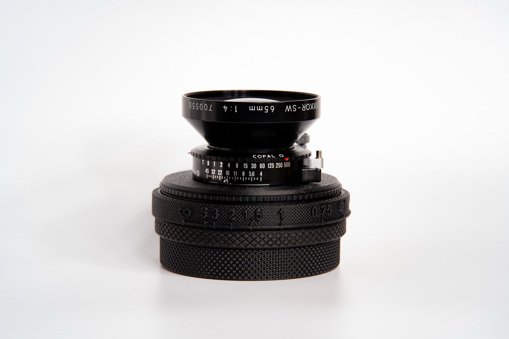
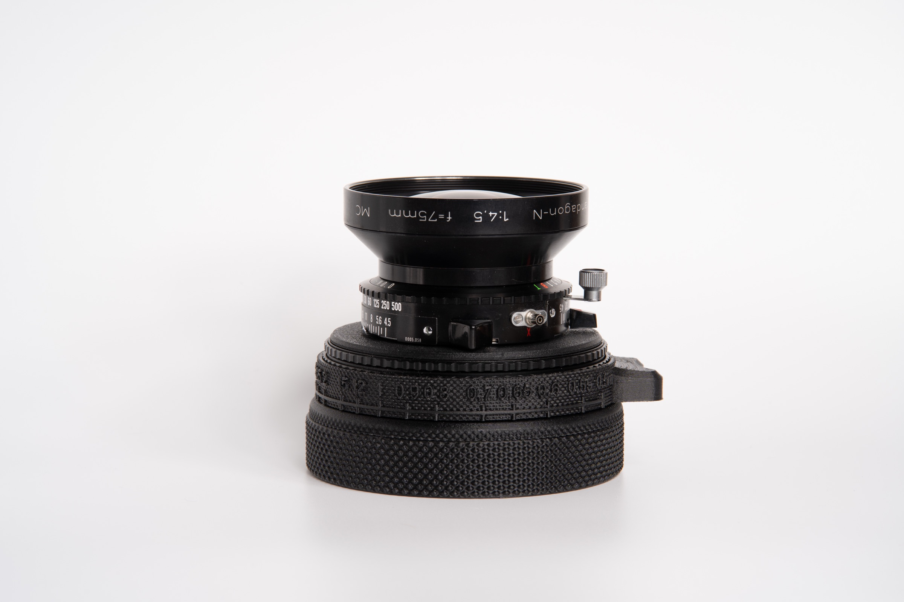
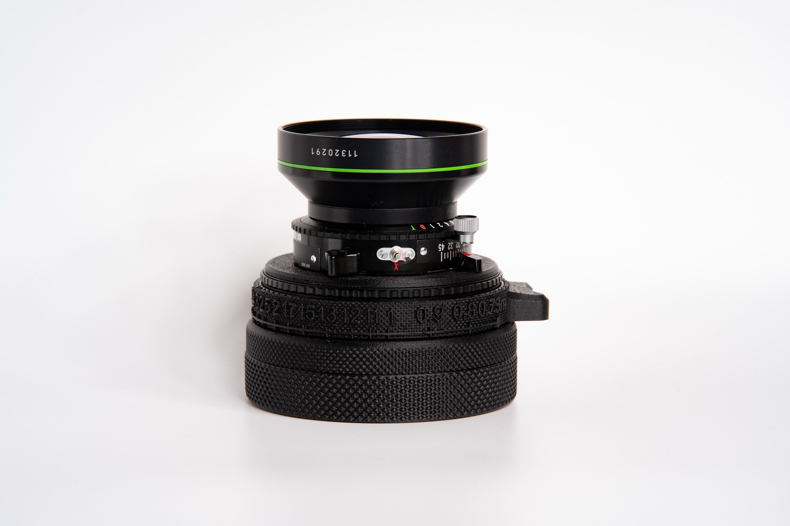
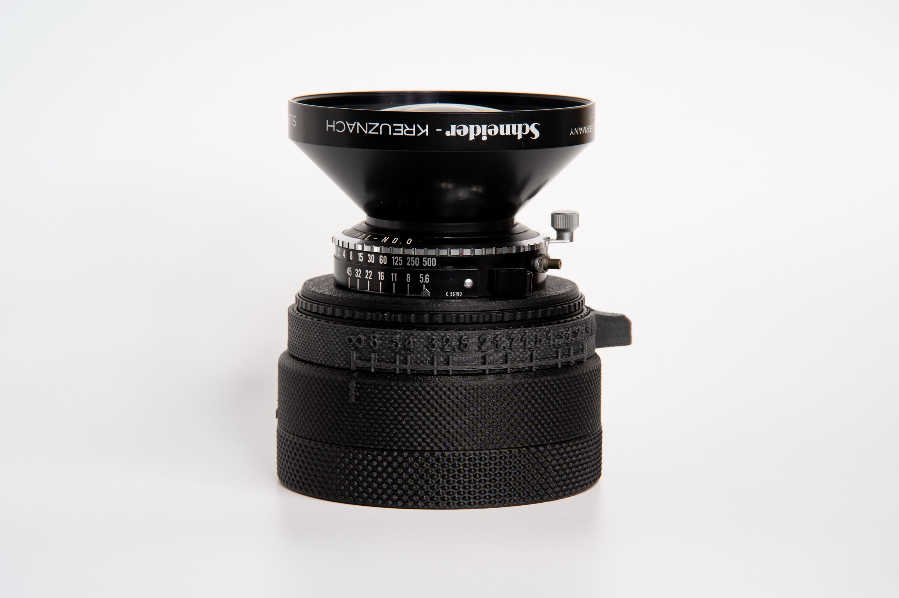
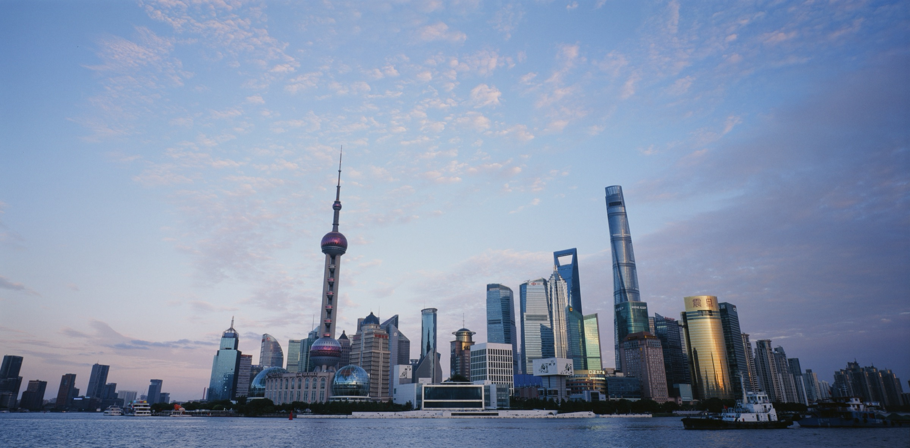
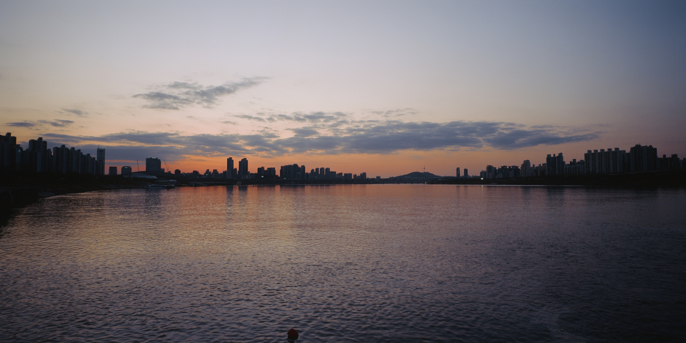
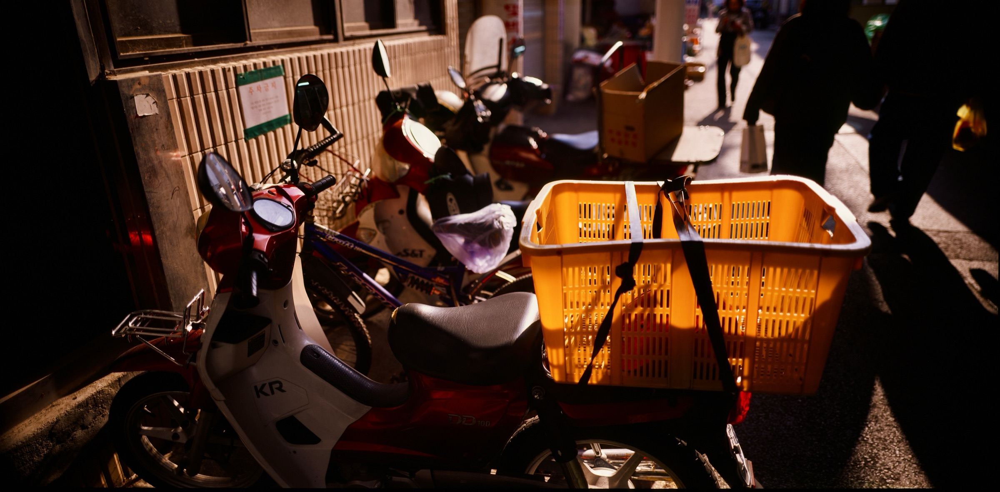
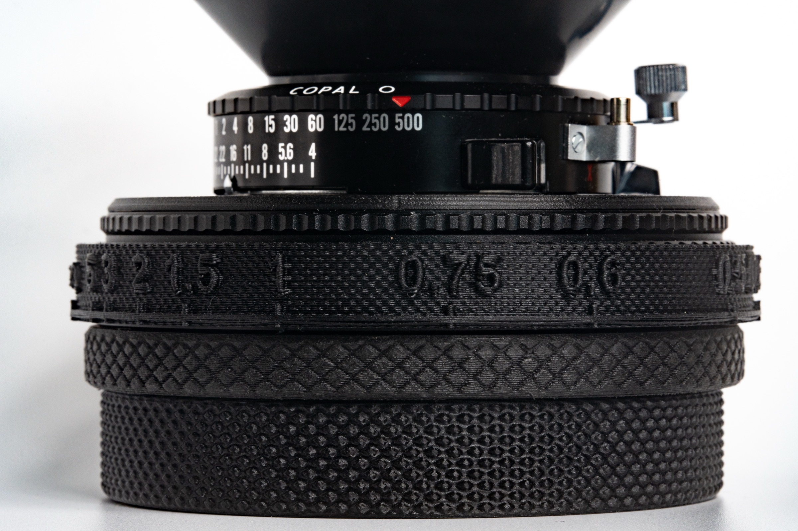

Two families. Twelve lenses. Each one in a custom helicoid with an engraved distance scale, calibrated to its body.
Family one
Rodenstock, Nikkor and Schneider — the pinnacle of optical engineering, adapted to the O.ZONE via custom helicoids.
See the lineupFamily two
Medium format press lenses with shutter, aperture and release built in. More compact and affordable, with a different rendering.
See the sixFamily one · Large format · custom helicoid
These lenses were never designed to focus by helicoid — they live on view cameras with bellows. The O.ZONE provides their focusing mechanism: a 3D-printed helicoid thread with an engraved distance scale, calibrated to each chassis depth.

Recommended · 65 mmEight glass elements, a massive front element, ~22 mm equivalent on 6×12. The architecture lens of the system — and the recommended dramatic-wide for any MP-cone build.

Recommended · 75 mm~26 mm equivalent on 6×12. The Goldilocks lens — natural, distortion-free panoramic sweep that matches the human eye. The recommended slim-cone wide.

Recommended · 90 mm~31 mm equivalent on 6×12. Massive image circle, zero vignette, a single known geometry across iterations — the recommended 90 mm for any MP-cone build.

Classic · check fitA cult-classic large format wide. Slightly faster than the Grandagon 90 — heavier rear group, with the unmistakable Schneider rendering.
⚠ Rear glass diameter varies between production iterations. Confirm fit with O.ZONE before ordering — the Rodenstock Grandagon 90 f/6.8 is the safer default if you don't need the Schneider rendering specifically.
Other variants · photos coming
~19 mm equivalent on a 6×12 frame. Pushes foregrounds aggressively away — perfect for high-impact environmental shots. (Still in development.)
The largest image circle of any 90 mm in the lineup, generous movements, modern multicoating. The XL Schneider rendering.
⚠ XL designs are typically non-exchangeable — likely requires a dedicated cone. Must be discussed with O.ZONE before ordering. The Rodenstock Grandagon 90 f/6.8 is the safer default for an MP-cone build.
The compact, lighter Super-Angulon. Smaller rear element than the f/5.6 — easier to pack, and the classic earlier Schneider rendering.
⚠ Rear glass diameter varies between production iterations. Confirm fit with O.ZONE before ordering. The Rodenstock Grandagon 90 f/6.8 is the safer default.
35mm-equivalent figures match diagonal angle-of-view on a 6×12 frame. On a 6×9 / 6×7 back the effective focal length grows longer (tighter framing); on a 4×5 sheet it shortens (wider framing). See the comparison table further down for per-format values.
Lens range — by design
Zone-focusing has a hard ceiling. A 65 mm at f/16 keeps everything from 6 m to infinity sharp — miss your distance estimate by half a meter, no big deal. A 150 mm on 4×5 at f/8 has a critical focus zone of centimeters, not meters. No careful estimating gets you there; you need ground glass and a loupe — which is what view cameras like the Linhof Master Technika or Sinar P are built for. The O.ZONE LF lineup is deliberately ultra-wide by 4×5 standards: 55, 65, 75, 90 mm where view photographers call 150 mm "normal." A different tool, for a different way of working.
Family two · Mamiya Press · Sekor
Originally designed for the Mamiya Press rangefinder of the 1960s, these lenses were built around an in-lens Seikosha leaf shutter. More compact and affordable than large-format glass, with a different rendering signature — and a different image-circle ceiling.
A forgiving, ultra-wide "street sweeper" on Instax Wide. Native image circle is too small for un-vignetted 6×12.
A classic medium-format wide. Easy to handhold, gentle distortion, friendly minimum focus. Image circle does not cover 6×12.
A noticeably larger image circle than the 50 or 65 — one of only two Mamiya Press lenses that cover the full 6×12 frame. Slight vignetting on 4×5.
A fast medium-format normal. The f/2.8 is the speed lens of the system; the f/3.5 is the bargain. Image circle does not cover 6×12.
A short telephoto with a notably wide image circle. Like the 75 mm, one of only two Mamiya Press lenses that cover 6×12 fully. Slight vignetting on 4×5.
The longest lens in the system. For when the subject is far away and needs compression. Image circle does not cover 6×12.
Made with O.ZONE glass
Sample photographs shot through O.ZONE large format lenses on 6×12 medium format film. One per lens.



The helicoid
Large format lenses don't have focus rings — they're designed to focus by moving the entire lens board on a bellows. The O.ZONE replaces that bellows with a 3D-printed helicoid thread, engraved with a distance scale calibrated to the specific chassis depth and back you're using.
Because the distance required to shift focus expands sharply as you get closer, the millimeter markings stretch further apart at minimum focus. Read the scale, dial it in, commit.

Quick reference
Effective focal length on a full-frame 35mm camera that would give the same diagonal angle of view. The same lens "reaches longer" on a smaller format and "spreads wider" on a larger one — a 65 mm behaves like ~28 mm on 6×9, ~22 mm on 6×12, ~18 mm on 4×5.
| Lens | Focal | 35mm equiv. on 6×9 | 35mm equiv. on 6×12 | 35mm equiv. on 4×5 | 6×12 coverage | 4×5 coverage | Instax coverage |
|---|---|---|---|---|---|---|---|
| Family one · Large format | |||||||
| Grandagon | 55 mm | ~24 mm | ~19 mm | ~15 mm | Yes | Yes | No |
| Nikkor SW Recommended | 65 mm | ~28 mm | ~22 mm | ~18 mm | Yes | Yes | No |
| Grandagon-N Recommended | 75 mm | ~32 mm | ~26 mm | ~21 mm | Yes | Yes | Yes |
| Grandagon Recommended | 90 mm | ~39 mm | ~31 mm | ~25 mm | Yes | Yes | Yes |
| Super-Angulon Check fit | 90 mm f/5.6 | ~39 mm | ~31 mm | ~25 mm | Yes | Yes | Yes |
| Super-Angulon XL Lens-locked | 90 mm f/5.6 XL | ~39 mm | ~31 mm | ~25 mm | Yes | Yes | Yes |
| Super-Angulon Check fit | 90 mm f/8 | ~39 mm | ~31 mm | ~25 mm | Yes | Yes | Yes |
| Family two · Mamiya Press | |||||||
| Mamiya | 50 mm | ~21 mm | N/A | N/A | No | No | FW69 only |
| Mamiya | 65 mm | ~28 mm | N/A | N/A | No | No | FW69 only |
| Mamiya | 75 mm | ~32 mm | ~26 mm | ~21 mm | Yes | Slight vignette | Yes |
| Mamiya | 100 mm | ~43 mm | N/A | N/A | No | No | FW69 only |
| Mamiya | 127 mm | ~54 mm | ~44 mm | ~36 mm | Yes | Slight vignette | Yes |
| Mamiya | 250 mm | ~107 mm | N/A | N/A | No | No | FW69 only |
35mm equivalents are computed by matching diagonal angle-of-view against a 35mm full-frame sensor (24 × 36 mm). "N/A" means the lens's image circle doesn't cover that format. All three Super-Angulon 90 variants give the same 35mm equivalent — they differ in image-circle size (which dictates available movements and fit on the O.ZONE), not in framing.
{kind=link}
{kind=link}
{kind=link}
{kind=link}
{kind=link}
{kind=link}
{kind=link}
{kind=link}